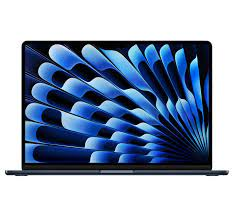

Apple 2023 MacBook Air Laptop with M2 chip: 15.3-inch Liquid Retina Display, 8GB Unified Memory, 256GB SSD Storage; Midnight with AppleCare+ (3 Years)

$1,528.00 $137.00
50+ available
IMPRESSIVELY BIG, IMPOSSIBLY THIN — The 15-inch MacBook Air makes room for more of what you love with a spacious Liquid Retina display. The durable 100 percent recycled aluminum enclosure is strikingly thin and light.
SUPERCHARGED BY M2 — Get more done faster with a powerful 8-core CPU, 10-core GPU, and up to 24GB of unified memory.
UP TO 18 HOURS OF BATTERY LIFE — Go all day with the power-efficient performance of the Apple M2 chip. (Battery life varies by use and configuration. See apple.com/batteries for more information.)
SPACIOUS, BEAUTIFUL DISPLAY — The high-resolution, 15.3-inch Liquid Retina display features 500 nits of brightness, P3 wide color, and support for one billion colors for vibrant images and incredible detail. (The display on the 15-inch MacBook Air has rounded corners at the top. When measured as a standard rectangular shape, the screen is 15.3 inches diagonally; actual viewable area is less.)
AppleCare+ for Mac extends your coverage to three years from your AppleCare+ purchase date and adds up to two incidents of accidental damage coverage.
Each incident of accidental damage coverage is subject to a service fee of $99 for screen damage or external enclosure damage, or $299 for other damage, plus applicable tax
Global repair coverage
Mail-in repair for portable computers: Mail in your Mac using a prepaid shipping box provided by Apple
Contact to seller
<-- back to home page
Product Information
Brand:
AppleColor:
MidnightRam Memory Installed Size:
8 GBDisplay resolution:
2560 x 1600 pixelsManufacturer:
Apple